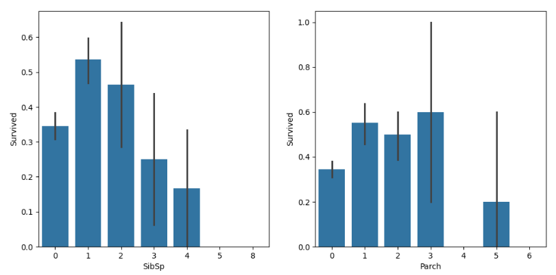

Titanic Survival Prediction — Top 1% Submission
79.2%
Accuracy Score
Accuracy Score
Top 1%
Kaggle Leaderboard
Kaggle Leaderboard
Random Forest
Best Model
Best Model
Problem
The sinking of the Titanic is one of the most infamous shipwrecks in history. While there was some element of luck involved in surviving, some groups of people were more likely to survive than others. The challenge was to build a predictive model that answers the question: “what sorts of people were more likely to survive?”
Approach
- Data Cleaning: Handled missing values for Age (imputation) and Cabin features.
- EDA: Visualized survival rates by Gender, Class, and Age groups using Seaborn.
- Modeling: Trained a Random Forest Classifier to predict survival binary (0/1).
Results
- Achieved a Kaggle accuracy score of 0.792.
- Confirmed that "Sex" (Female) and "Pclass" (1st Class) were the strongest determinants of survival.
Visualizations
- Gender Factor The gender of the passengers played a significant role in survival rates. Females were much, much more likely to survive at all ages than men. This is likely due to the social expectations of the men to save women and children first.

- Family: People with family on board were much more likely to survive. This is likely because families would look out for each other and try to stay together during the chaos of the sinking. To take advantage of this, I created a new feature called "Family Size" which combined the number of siblings/spouses and parents/children aboard.
